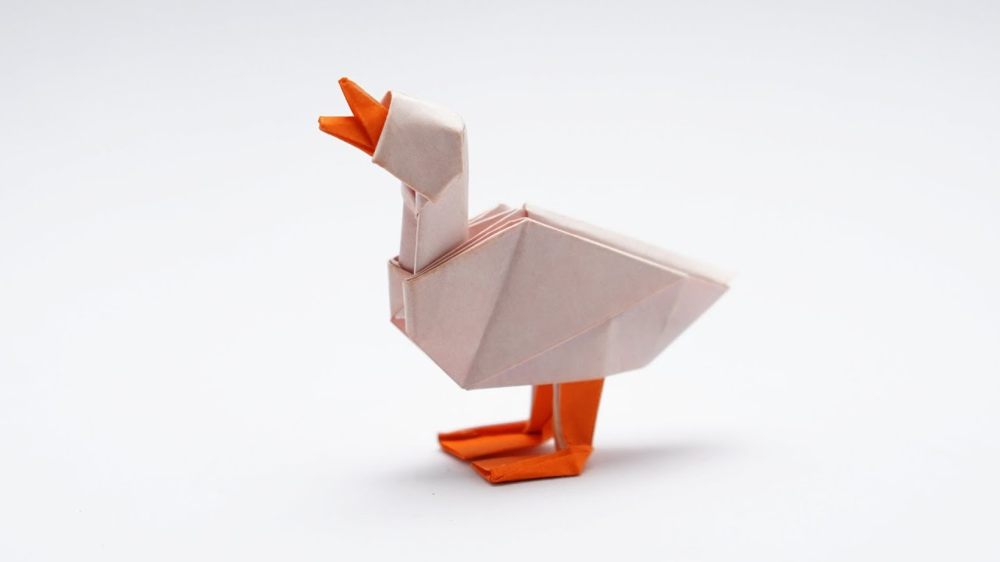
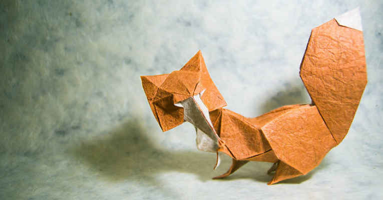
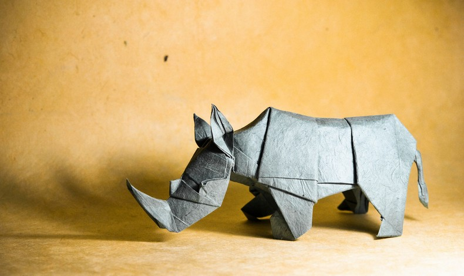
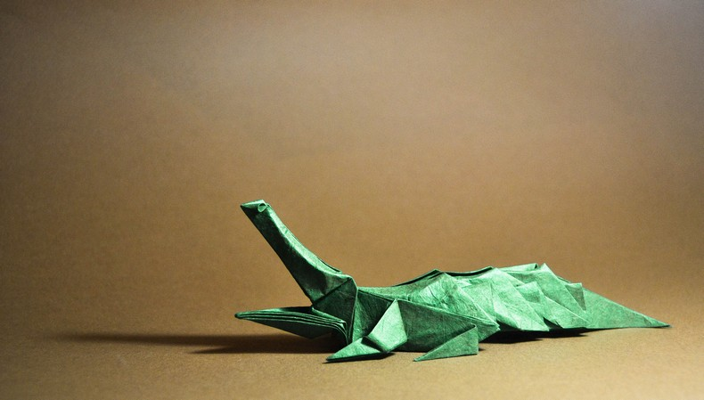

Pato
Patos são excelentes mergulhadores
Nem todos os patos fazem o som "quack"
Os patos não precisam ir ao dentista
O pato mais velho da história viveu até os 20 anos
Faça você mesmo!!!

Raposa
Patos são excelentes mergulhadores
Nem todos os patos fazem o som "quack"
Os patos não precisam ir ao dentista
O pato mais velho da história viveu até os 20 anos
Faça você mesmo!!!

Rinoceronte
Os chifres dos rinocerontes são compostos de queratina
Chifres de rinocerontes (supostamente) têm propriedades curativas
O rinoceronte-branco é o terceiro maior mamífero terrestre
Rinocerontes são herbívoros
Faça você mesmo!!!

Crocodilo
Os crocodilos são os maiores répteis da Terra
A mordida de um crocodilo é a mordida mais forte de qualquer animal do mundo
Os crocodilos são excelentes nadadores
Dinossauros e crocodilos estão relacionados
Faça você mesmo!!!